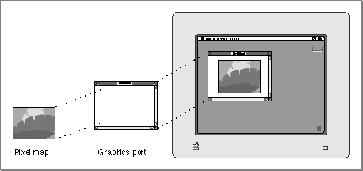

Legacy Document
Important: The information in this document is obsolete and should not be used for new development.
Important: The information in this document is obsolete and should not be used for new development.


Drawing Environments
The Macintosh computer was the first to popularize the bitmapped screen, as opposed to the character-oriented screen--common to terminals and early personal computers--on which only a single, built-in character set could be displayed. On a bitmapped screen every pixel can be manipulated. Pixels are the dots that make up a visible image on the screen. Drawing on the Macintosh screen consists of manipulating memory bits that QuickDraw translates into an analogous manipulation of pixels. This allows your application to create shapes and characters in differing sizes and differing styles. Such flexibility gives your application and its users many of the capabilities of a design studio and a print shop.Your application performs all graphics operations in graphics ports. A graphics port is a drawing environment--defined by a
GrafPortrecord for a basic graphics port or aCGrafPortrecord for a color graphics port--that contains the information QuickDraw needs to transmit drawing operations from bits in memory to onscreen pixels.A basic graphics port is the drawing environment provided by basic QuickDraw; a basic graphics port contains the information that basic QuickDraw uses to create and manipulate onscreen either black-and-white images or color images that employ a basic eight-color system.
A color graphics port is the sophisticated color drawing environment provided by Color QuickDraw; a color graphics port contains the information that Color QuickDraw uses to create and manipulate grayscale and color images onscreen.
While your application can draw directly into basic and color graphics ports, you can improve your application's appearance and performance by constructing images in offscreen graphics worlds and then copying them to onscreen graphics ports. An offscreen graphics world is a sophisticated environment for preparing complex color, grayscale, or black-and-white images before displaying them on the screen. Defined in a private data structure referred to by a pointer of type
GWorldPtr, an offscreen graphics world also contains a graphics port of its own.Your application can print the images it prepares in graphics ports by drawing into a printing graphics port using QuickDraw drawing routines. A printing graphics port is the printing environment defined by a
TPrPortrecord, which contains a graphics port plus additional information used by the printer driver and system software.The visible image for a graphics port is contained in either a bitmap or a pixel map. A bitmap is defined by a data structure of type
BitMap, and it represents the positions and states of a corresponding set of pixels, which can be either black and white or the eight predefined colors provided by basic QuickDraw. A bitmap is contained within a basic graphics port. A pixel map is defined by a data structure of typePixMap, and it represents the positions and states of a corresponding set of color pixels. A handle to a pixel map is contained within a color graphics port.Because your application can typically deal with graphics ports instead of hardware devices, QuickDraw helps your application achieve device independence. A graphics port does the following:
The fields of a graphics port are maintained by QuickDraw, and you should never write directly into those fields. However, QuickDraw provides routines for changing the fields of a graphics port: you can point to an image in a different area of memory, reshape and resize the pen, change the pen's pattern and color, and switch fonts. You can, and often must, read the fields of a graphics port.
- It specifies the bitmap or pixel map that points to the area of memory in which your drawing operations take place. The bitmap or pixel map contains information about how that memory should be arranged to map bits to the screen.
- It contains a metaphorical graphics pen with which to perform drawing operations. You can set this pen to different sizes, patterns, and colors.
- It holds information about text: if your application or its user writes characters, they will be styled and sized according to information in your application's graphics port.
Figure 1-1 illustrates how an onscreen image represents bits in memory. In this figure, an application uses the Window Manager function
GetNewCWindowto create a new window on a grayscale screen;GetNewCWindowautomatically uses Color QuickDraw to create the graphics port for the empty window. The application uses Color QuickDraw procedures to fill the graphics port's pixel map with an image and to draw the image onscreen.Figure 1-1 A grayscale image representing bits in memory
